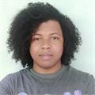
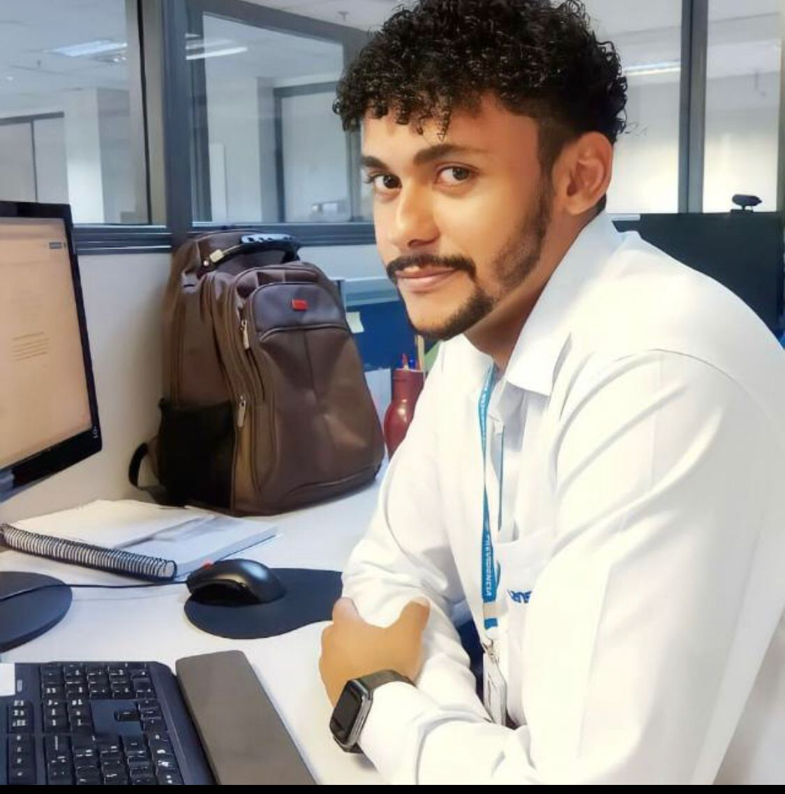
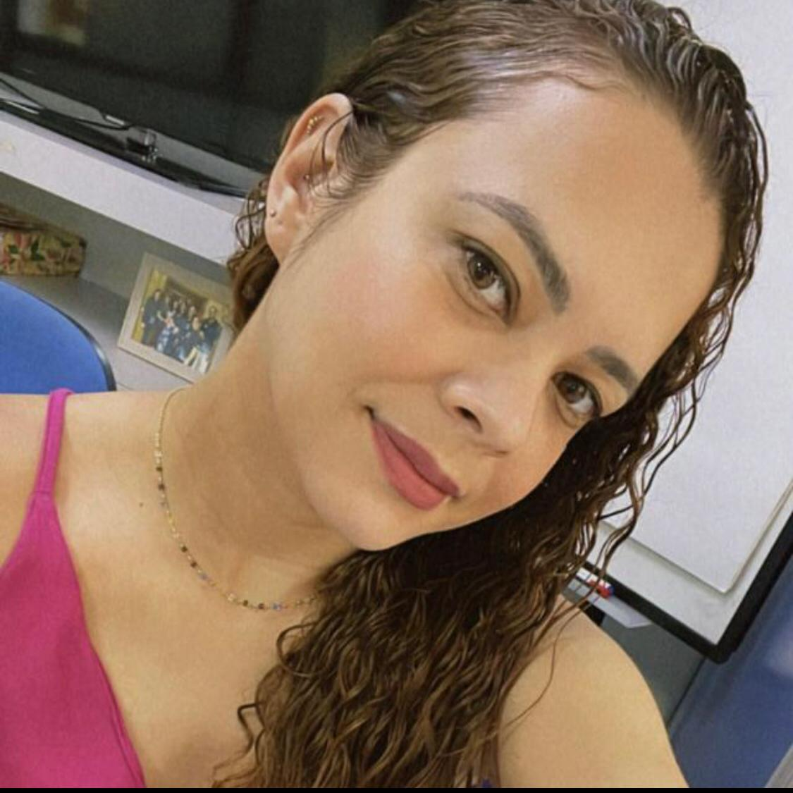
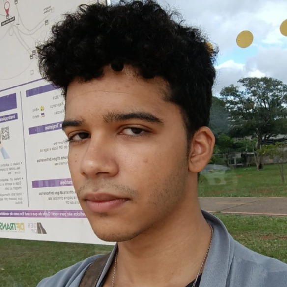
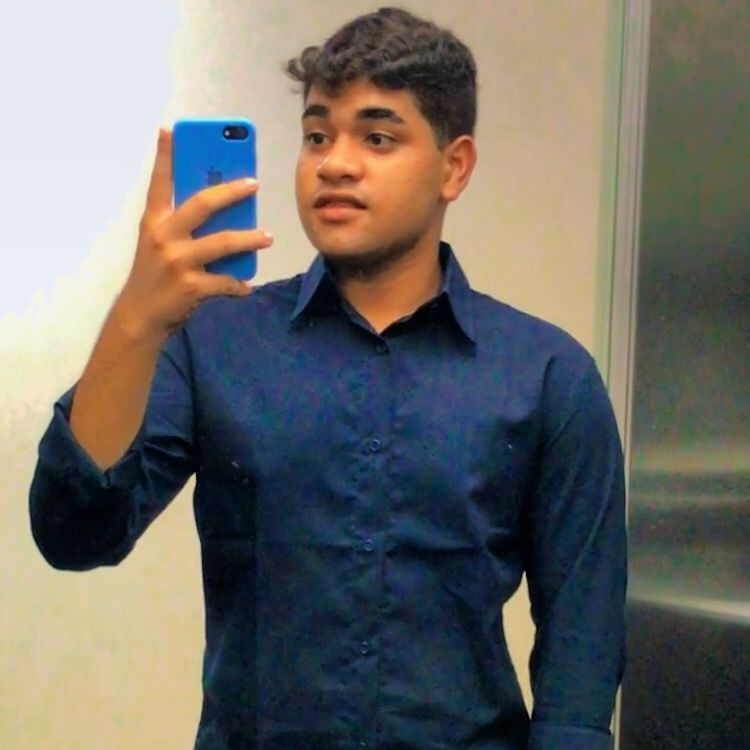

Pedro Mascarenhas (Chefe da equipe SECAP)
Pedro Mascarenhas é um chefe exemplar que se destaca por sua liderança inspiradora e habilidades de gestão. Sua comunicação eficaz permite que ele transmita de forma clara e precisa as expectativas e direcionamentos para sua equipe. Além disso, ele é um mestre em motivar seus colaboradores, reconhecendo seus esforços e incentivando o desenvolvimento pessoal e profissional.
Pedro Mascarenhas mantém um foco claro em resultados, estabelecendo metas desafiadoras e trabalhando em conjunto com sua equipe para alcançá-las. Ele acompanha o progresso, identifica oportunidades de melhoria e implementa estratégias eficazes.
Pedro Mascarenhas é um chefe inspirador, que lidera com empatia, respeito e confiança. Sua habilidade em motivar e desenvolver sua equipe, aliada ao seu foco em resultados, torna-o um líder admirável. Seu estilo de gestão positivo e colaborativo cria um ambiente de trabalho produtivo e gratificante.

Jailma Ramos (Terceirizada)
Jailma Ramos é uma terceirizada exemplar, que se destaca por sua dedicação, comprometimento e habilidades profissionais. Ela é conhecida por sua ética de trabalho impecável e sua capacidade de entregar resultados de alta qualidade. Jailma também é conhecida por sua proatividade. Ela está sempre em busca de oportunidades para melhorar e aprimorar suas habilidades. Ela não tem medo de assumir desafios e está disposta a aprender coisas novas para expandir seu conhecimento. Sua dedicação e comprometimento são evidentes em seu trabalho diário. Jailma está sempre pronta para enfrentar novos desafios e nunca deixa que obstáculos a impeçam de alcançar seus objetivos. No geral, Jailma Ramos é uma terceirizada excepcional, cuja contribuição para o sucesso do projeto é inegável. Sua ética de trabalho, habilidades profissionais e atitude positiva a tornam uma ótima escolha para qualquer equipe ou projeto.

Lucas Alessandro (Terceirizado)
Lucas Alessandro é um terceirizado extraordinário, cujo desempenho e habilidades são verdadeiramente notáveis. Ele é reconhecido por sua dedicação incansável, comprometimento inabalável e talento excepcional em suas atividades. Como terceirizado, Lucas é altamente confiável e responsável. Ele demonstra um compromisso inquestionável com a qualidade do trabalho e cumpre todos os prazos com precisão. Sua atenção aos detalhes e busca pela perfeição garantem resultados de excelência. Lucas é um comunicador habilidoso, capaz de transmitir suas ideias e necessidades de forma clara e eficaz. Ele é uma pessoa fácil de trabalhar, mostrando-se aberto a sugestões e colaborando de maneira proativa com sua equipe. Lucas é um profissional comprometido com o aprendizado contínuo. Ele busca constantemente aprimorar suas habilidades e se manter atualizado nas últimas tendências e tecnologias relevantes para sua área de atuação. Sua motivação para crescer profissionalmente é inspiradora. Em suma, Lucas Alessandro é um terceirizado excepcional, cujas qualidades profissionais, comprometimento e paixão pelo trabalho o destacam. Sua ética profissional exemplar, habilidades únicas e dedicação inabalável o tornam uma escolha incomparável para qualquer projeto ou equipe.

Ericka Silva (Estagiária)
Ericka Silva, nossa estagiária, é uma profissional exemplar que se destaca por sua dedicação e comprometimento no ambiente de trabalho. Ela é uma pessoa extremamente esforçada, sempre disposta a enfrentar desafios e superar obstáculos em busca de resultados excepcionais. Uma das características marcantes de Ericka é sua leveza no trabalho. Ela traz consigo uma energia positiva e uma atitude otimista, que contagiam a todos ao seu redor. Mesmo diante de situações desafiadoras, Ericka consegue manter uma postura tranquila e serena, o que contribui para um ambiente de trabalho harmonioso. Além disso, Ericka é uma estagiária altamente concentrada. Ela sabe priorizar suas tarefas, focando em suas responsabilidades e buscando entregar um trabalho de qualidade. Sua capacidade de concentração permite que ela se mantenha focada mesmo em situações de pressão, garantindo que as atividades sejam concluídas dentro dos prazos estabelecidos. O esforço de Ericka é admirável. Ela está sempre disposta a aprender, se aprimorar e se dedicar ao máximo em suas atividades. Ela não mede esforços para buscar conhecimento adicional e se atualizar sobre as melhores práticas em sua área. Sua determinação em crescer profissionalmente é evidente em seu trabalho diário. Ericka é uma estagiária comprometida com o sucesso da equipe. Ela está sempre pronta para auxiliar seus colegas, compartilhar conhecimentos e colaborar em projetos conjuntos. Sua atitude colaborativa e sua disposição para ajudar fazem dela uma integrante valiosa de qualquer equipe.

Pedro Jordan (Estagiário)
Pedro Jordan é um estagiário excepcional que merece ser reconhecido por suas habilidades notáveis com o Excel e sua eficiência no trabalho. Ao longo de seu tempo conosco, Pedro tem mostrado um talento impressionante na criação e manipulação de planilhas, tornando-se um verdadeiro especialista nessa ferramenta. Além das suas competências técnicas, Pedro se destaca igualmente pela sua produtividade no ambiente de trabalho. Ele é amplamente reconhecido pela sua capacidade de cumprir prazos de forma consistente e por fornecer resultados de excelência. A sua notável atenção aos detalhes assegura a precisão e a ausência de erros em suas planilhas. Sua atitude proativa e seu desejo de superar expectativas são notáveis. Ele não mede esforços para garantir que suas planilhas sejam completas, confiáveis e de fácil compreensão para aqueles que as utilizam. Em resumo, além de possuir habilidades técnicas destacadas, Pedro se destaca pela sua eficiência no trabalho.

Carlos Souza (Estagiário)
Carlos Souza, um estagiário de nível médio, é verdadeiramente impressionante em suas habilidades de programação. Sua proficiência em HTML, Python e CSS é notável, demonstrando um conhecimento sólido e um talento inato para a lógica de programação. Ele é capaz de criar soluções eficientes e eficazes, enfrentando desafios com facilidade. Um dos traços mais notáveis de Carlos é a sua proatividade. Ele está sempre um passo à frente, antecipando problemas e oferecendo soluções antes mesmo que sejam solicitadas. Sua iniciativa é uma grande vantagem para a equipe, pois ele está sempre disposto a assumir responsabilidades adicionais e ajudar onde for necessário. Além das suas habilidades técnicas, Carlos é fluente em inglês. Essa proficiência linguística permite que ele se comunique efetivamente com colegas de trabalho e clientes internacionais, facilitando a colaboração em projetos globais. Outro aspecto positivo de trabalhar com Carlos é a sua leveza e adaptabilidade. Ele é uma pessoa tranquila, de fácil convivência e aberta a feedbacks construtivos. Sua atitude positiva cria um ambiente de trabalho agradável, inspirando outros membros da equipe a se esforçarem e trabalharem de forma eficiente. Sua eficiência é notável, cumprindo prazos com consistência e entregando resultados de alta qualidade. Carlos tem a habilidade de priorizar tarefas e trabalhar de forma organizada, garantindo que todas as demandas sejam atendidas de maneira eficiente e eficaz. Em suma, Carlos Souza é um estagiário de nível médio excepcional, que se destaca em programação, com habilidades sólidas em HTML, Python e CSS. Além disso, sua proficiência no uso do Word e Excel permite que ele lide com tarefas complexas de forma ágil. Sua proatividade, fluência em inglês, leveza, eficiência e facilidade de trabalhar fazem dele um membro valioso da equipe, sempre pronto para contribuir e alcançar resultados positivos.
Yanna Kyara
Yanna Kyara é uma estagiária de ensino médio que possui habilidades notáveis em programação, especialmente na linguagem Java. No entanto, embora seja proficientes em linguagens de programação, ela atualmente desempenha o papel de assistente administrativa. Sua personalidade é marcada por uma leve timidez, gentileza e alegria constante. Embora não seja muito expansiva verbalmente, Yanna é capaz de agregar significativamente sempre que decide compartilhar suas ideias e opiniões. Sua combinação única de competências técnicas e traços pessoais faz dela uma colaboradora valiosa, tanto no desenvolvimento técnico quanto no ambiente de trabalho em equipe.
Maria Duque (Estagiária)
Maria Fernanda é uma estagiária exemplar, cujas qualidades a destacam em sua atuação profissional. Sua dedicação e esforço são evidentes em todas as tarefas que ela realiza. Além disso, ela é extremamente responsável, sempre cumprindo prazos e compromissos com seriedade.
Sua inteligência é notável, demonstrando uma capacidade excepcional de assimilar novos conhecimentos e aplicá-los de forma eficaz. Maria Fernanda também se destaca por ser amorosa e ter um coração generoso, sempre disposta a ajudar e apoiar seus colegas de trabalho.
Outra qualidade admirável é a sua discrição. Maria Fernanda é capaz de manter informações confidenciais em sigilo, demonstrando um alto grau de profissionalismo e confiança. Além disso, ela é grata pelas oportunidades que recebe e expressa sua gratidão de forma genuína.
Sua esperteza e sagacidade a auxiliam a encontrar soluções criativas para os desafios que surgem em seu trabalho diário. Maria Fernanda é conhecida por sua sinceridade e honestidade, sempre falando a verdade e sendo transparente em suas ações.
Sua fidelidade é inquestionável, tanto em relação às responsabilidades atribuídas a ela quanto em seus relacionamentos interpessoais. Ela é comprometida com seus deveres e demonstra uma habilidade notável em executá-los com eficiência.
Em resumo, Maria Fernanda é uma estagiária habilidosa, que reúne uma combinação única de qualidades, desde seu esforço e responsabilidade até sua inteligência e amorosidade. Sua discrição, gratidão, esperteza, sinceridade, fidelidade, honestidade e comprometimento são características que a tornam uma profissional excepcional e digna de reconhecimento.

Fernando Lucas (Estagiário)
Fernando Lucas é um estagiário excepcionalmente talentoso e dedicado, conhecido por suas habilidades impressionantes em matemática e análise de dados. Com um domínio sólido dos princípios matemáticos e uma mente analítica afiada, Fernando é capaz de desvendar padrões e tendências em conjuntos de dados extensos. Sua habilidade em interpretar e visualizar informações é um recurso inestimável para a equipe, permitindo que eles tomem decisões informadas e estratégicas. Fernando é um membro valioso da equipe, cuja contribuição é altamente valorizada. Sua capacidade de realizar análises matemáticas complexas e sua abordagem pró-ativa para o trabalho fazem dele um estagiário excepcionalmente talentoso e promissor. Sua paixão pela matemática e sua habilidade em analisar dados certamente o levarão a conquistar grandes feitos em sua carreira profissional.
Marcos Felipe (Estagiário)
O estagiário Marcos Felipe destaca-se pela fluência na Língua Brasileira de Sinais (Libras) e pela sua trajetória como estudante de Direito. Sua habilidade em Libras não apenas possibilita uma comunicação inclusiva com pessoas surdas ou com deficiência auditiva, mas também promove um ambiente acessível. Ao mesmo tempo, sua dedicação à área jurídica demonstra um compromisso em compreender e aplicar princípios legais, potencialmente ampliando sua capacidade de representar e defender direitos de maneira abrangente e significativa.